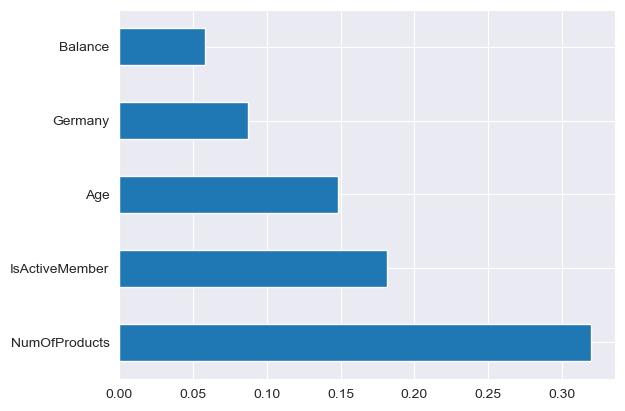

Created a model which can classify if the Bank Customer is going to Exit (Leave) or not.
Create a model which can classify if the Bank Customer is going to Exit (Leave) or not.
This is a Classification problem for Churn Modelling which can be solved using various classification Algorithms such as XGBoost.
The Dataset consists of 10000 records of Bank Customers.
The Dataset is taken from: https://www.kaggle.com/datasets/barelydedicated/bank-customer-churn-modeling/data?select=Churn_Modelling.csv
├── data
│ ├── churn_modelling.csv
├── src
│ ├── Bank_Churn.ipynb
│ ├── churn_modelling.csv
├── .gitignore
└── README.md
A Plot of Feature Importance:

Retaining customers is vital for the survival of a business. It is important for organizations to know which customers are going to leave in the near future so that they can take measures to prevent them from leaving. We Analysed the dataset and discovered the important features to predict customer churn with 86% Baseline Model Accuracy.
Using Hyperparameter Tuning for XGBoost, the model's accuracy can be further improved.